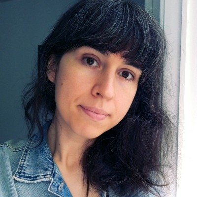

Em destaque
Núcleos de informações prejudiciais: relações entre machosfera e extrema direita nas redes brasileiras do Telegram

Eduarda Gabriela Velho
Professora e pesquisadora, PhD
Doutora em Processos e Manifestações Culturais. Utiliza programação e algoritmos de análise de textos para pesquisar acerca da circulação de informações prejudiciais na internet.